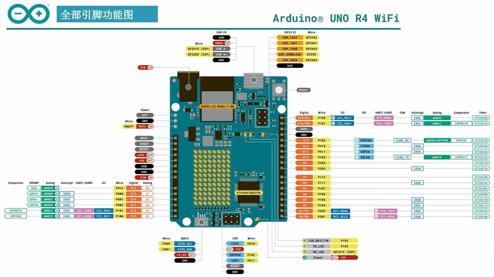
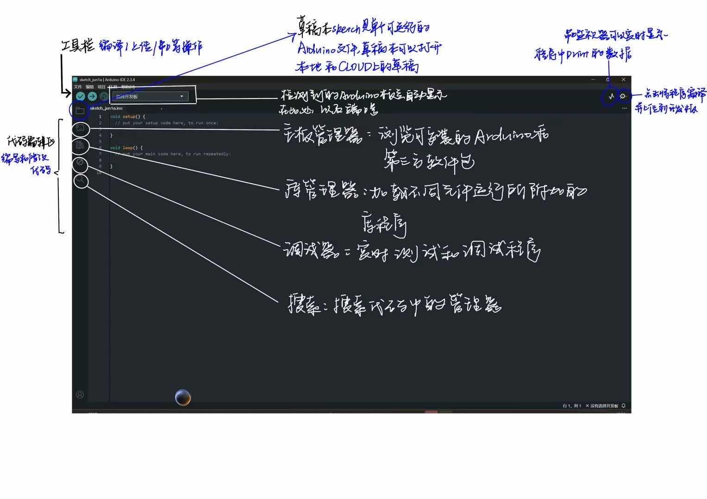
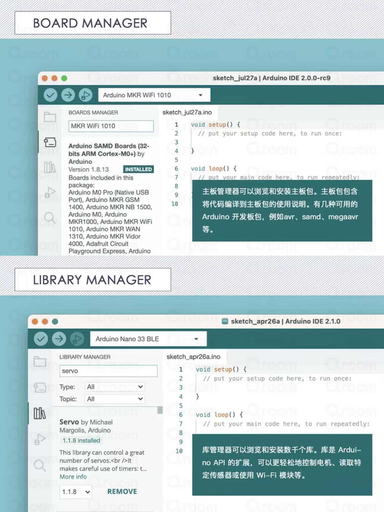
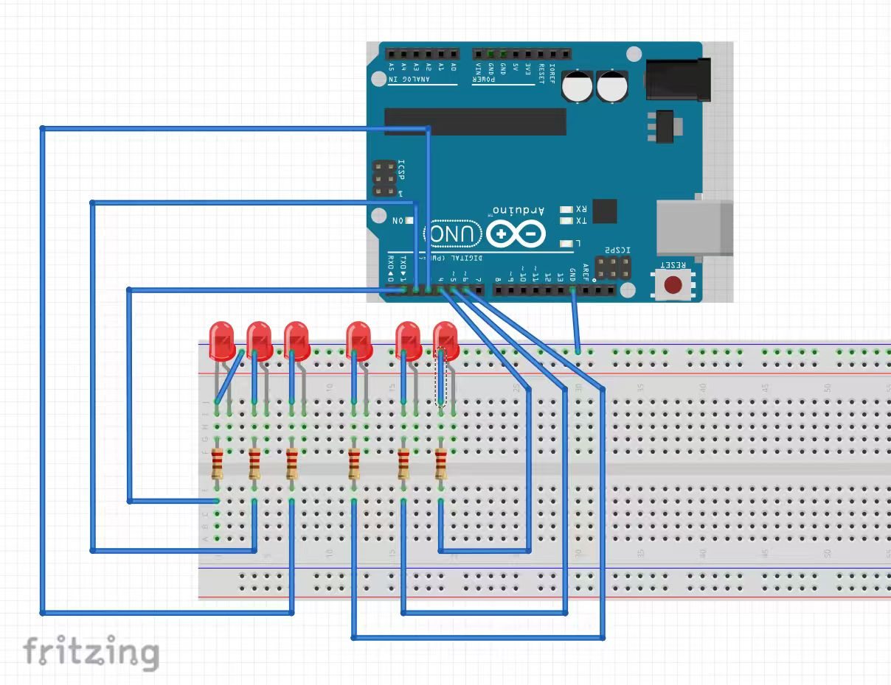
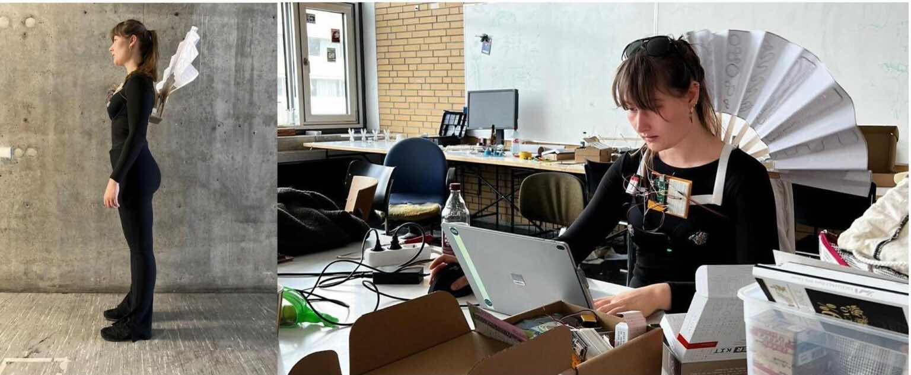

Exercise 2: Arduino Basics & Running Light
Learning Open Source Hardware - Arduino UNO R4 WiFi Development Board
Introduction to Arduino

Reference: Arduino UNO R4 WiFi 开发板详解 - View on Xiaohongshu (Little Red Book)
Arduino is an open-source electronic prototyping platform that includes hardware (various Arduino board models) and software (Arduino IDE). Its core advantages are:
- Open Source & Free: Hardware design, software code, and schematics are all open source, allowing free modification and secondary development
- Low Barrier to Entry: Uses simplified C/C++ syntax, no need to delve into microcontroller底层, beginners can get started quickly
- Strong Ecosystem: Massive open-source libraries, sensor modules, and project cases worldwide, capable of achieving almost all electronic creativity
Common Application Scenarios:
- Teaching & Learning: Programming basics (C/C++, logic training), electronics basics (sensors, LEDs, motors, circuits), school courses, graduation projects
- Smart Home: Smart lighting, environmental monitoring (temperature, humidity, air quality), automatic control (watering, feeding, curtains), security alerts
- Interactive Art & Installations: Interactive light shows, new media art installations, stage/exhibition effects
- DIY Electronics: Electronic clocks, thermometers, hygrometers, remote switches, doorbells, 3D printer controllers
- Industrial/Lab Applications: Data collection, simple automation control, IoT nodes (WiFi/Bluetooth data upload)
1. Arduino IDE
(1) Introduction
Arduino IDE is an integrated development environment for writing, uploading, and debugging programs based on the Arduino platform. It's an open-source tool that runs on Windows, Mac OS X, and Linux systems. It uses C/C++ language with a simple graphical interface, including built-in code editor, compiler, uploader, and serial monitor.





References:
- 零基础学Arduino-2《 IDE 界面功能介绍》 - View on Xiaohongshu (Little Red Book)
- 📒・Arduino入门・IDE界面介绍 - View on Xiaohongshu (Little Red Book)
(2) Coding Methods
- Program Structure: All Arduino programs contain two core functions.
setup()runs once at startup for initialization;loop()runs infinitely after setup for core logic. - Comments: Used to improve code readability, supporting single-line and multi-line comment formats.
- Variables: Supports int, float, char, boolean types. Variable names must start with a letter and can contain letters, numbers, and underscores.
- Pin Operations: Core hardware interaction through
pinMode(),digitalRead(), anddigitalWrite(). - Custom Functions: Create custom functions to encapsulate code logic and simplify complex program structures.
- Library Usage: Import official/third-party libraries via
#includeto quickly implement servo control, I2C communication, sensor drivers, etc. - Serial Communication: Use Serial object for board-computer data interaction via
Serial.begin(),Serial.print(), andSerial.println().
(3) Hardware Connection
- Board Connection: Connect Arduino board to computer via USB cable for program upload, serial communication, and basic power supply.
- External Circuit Connection: Connect sensors, LEDs, buttons via jumper wires to digital/analog pins. Must correctly distinguish VCC, GND, and signal lines. LEDs need 220Ω current-limiting resistors.
- Power Supply: High-power components (motors, large LEDs, servos) require external batteries or power adapters to avoid board damage.
- Program Upload: After writing and debugging code in IDE, select the correct board model and COM port, then upload with one click.
- Debugging & Testing: Use serial monitor to view Serial output data and verify sensor values, pin states, and program logic.
2. Running Light Program
Below is the complete code for implementing the running light effect:
// Define LED pins: 2, 3, 4, 5, 6, 7
int ledPins[] = {2, 3, 4, 5, 6, 7};
int ledCount = 6;
void setup() {
// Initialize all pins as output mode
for (int i = 0; i < ledCount; i++) {
pinMode(ledPins[i], OUTPUT);
}
}
void loop() {
// Light from left to right
for (int i = 0; i < ledCount; i++) {
digitalWrite(ledPins[i], HIGH);
delay(150);
digitalWrite(ledPins[i], LOW);
}
// Light from right to left
for (int i = ledCount - 2; i > 0; i--) {
digitalWrite(ledPins[i], HIGH);
delay(150);
digitalWrite(ledPins[i], LOW);
}
}

3. Case Studies
Case 1: "Emotion Aid" Project

- Core Objective: Help people with communication barriers (especially autism spectrum) convey their emotional states to the outside world using devices instead of body language
- Hardware Architecture: Arduino Uno Rev3 + capacitive humidity sensor (EDA/GSR) + temperature sensor + pulse sensor + 9V battery
- Output Method: Drive a fan-like device through small servos, changing its shape to express emotions through intuitive physical "fanning" motions
Advantages:
- Novel & Intuitive Output: Uses pure physical motion to express emotions rather than screens or lights, more friendly to sensory-sensitive individuals
- Multi-modal Signal Fusion: Integrates EDA, body temperature, and heart rate signals using "multi-modal fusion" to improve emotion inference robustness
- Open Source & Community Friendly: Complete course design with code, circuit diagrams, and structural designs fully open-sourced on Instructables
Disadvantages:
- Oversimplified Emotion Inference: Inferring complex human emotions solely from EDA, heart rate, and temperature is scientifically extremely difficult
- Rough Data Fusion: No effective noise reduction or feature extraction on raw data; motion artifacts severely interfere with signals
- Suboptimal Wearing Position: Attached to underwear limits gender applicability and is greatly affected by breathing and body movement
- Battery & Durability Issues: 9V battery has limited capacity,难以 support long-term use and servo current requirements
- Risk of Emotional Labeling: Crude simplification of emotional states may传递 wrong information when misjudged, causing social misunderstandings
Case 2: UESTC Professor Xu Peng's Team - "Wireless Brain Function Assessment System"
Case Link: https://www.new1.uestc.edu.cn/?n=UestcNews.Front.DocumentV2.ArticlePage&Id=96164
- Core Objective: Provide objective, quantitative auxiliary diagnosis and precise intervention for autism, benefiting over 3,000 children domestically and internationally
- Hardware Architecture: Wireless dry-electrode EEG cap (non-invasive) and targeted transcranial magnetic stimulation device, no conductive gel required
- Core Technology: Diagnosis uses deep learning and transfer learning AI algorithms to identify brain network abnormalities (>90% accuracy); intervention precisely locates superficial nodes to indirectly regulate deep brain regions
Advantages:
- Pioneered "Quantitative Diagnosis": Combined EEG signals with AI algorithms to transform diagnosis from experience-based "qualitative judgment" to data-supported "quantitative diagnosis"
- High User-Friendliness: Wireless dry-electrode EEG cap for diagnosis and short-duration treatment (3 times daily, 40 seconds each) greatly improved comfort and cooperation
- "Deep Brain" Intervention Possible: Targeted transcranial magnetic therapy indirectly regulates deep brain regions through superficial "relay stations", achieving over 80% effectiveness
Disadvantages:
- High Technical Threshold & Cost: BCI and TMS equipment研发 and manufacturing costs are high, mainly面向 tertiary hospitals or professional rehabilitation institutions in the short term
- Physiological Signal Limitations: EEG signals have low signal-to-noise ratio and are easily interfered with;后期 processing and AI model training require extremely high algorithm standards
- Institutional Application Constraints: The entire system requires professional场地 operation,难以 serve as home daily intervention equipment
- Long-term Safety & Effectiveness Pending Verification: Although effectiveness exceeds 80%, this evaluation多源于 short-term clinical observations; long-term impacts need longer tracking studies
- "Black Box" Problem: AI algorithms虽 accurate but decision logic is opaque to humans, making it difficult for doctors to judge specific bases for conclusions
Summary
Through this exercise, we learned:
- The core concepts and application scenarios of Arduino open-source hardware platform
- Arduino IDE usage, coding methods, and hardware connection techniques
- How to write and upload running light programs to control multiple LEDs
- Analyzed two real-world cases applying Arduino technology to assist autistic individuals
- Understanding both innovative solutions and existing challenges in assistive technology